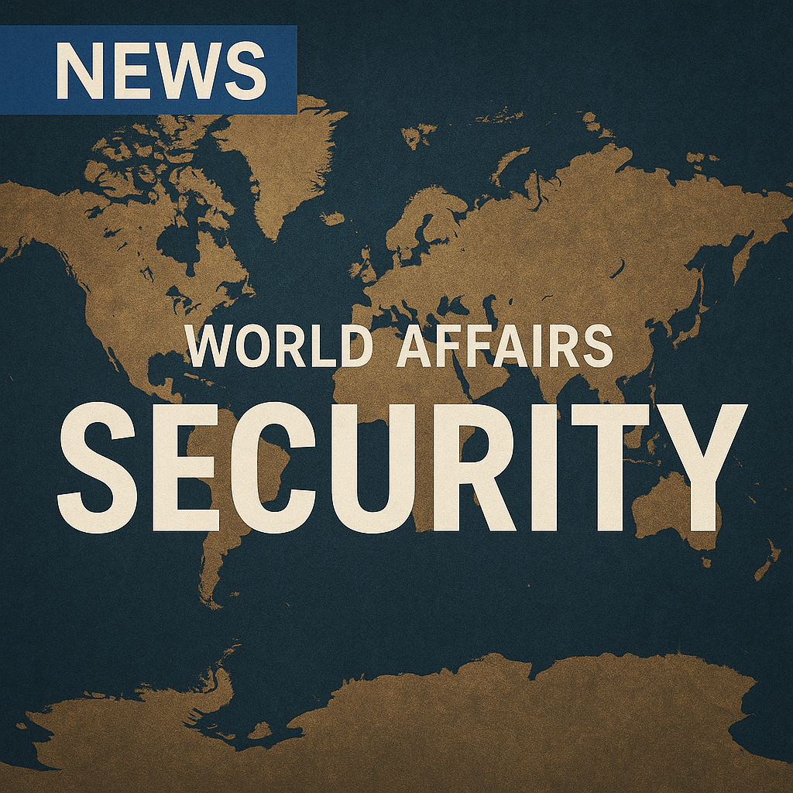

2026-03-12

### ① 今起きていること
ケニアから女王アリ約2,000匹を密輸しようとした中国国籍の容疑者が逮捕されました。検察によると、容疑者は一部のアリを試験管に入れて運び、他のアリはトイレットペーパーの芯に隠すなど巧妙に隠蔽していたとのことです。この事件は野生生物の違法取引および生物多様性保護の観点から注目されています。
### ② 日本への影響
女王アリの密輸は一見小規模に見えますが、外来種の拡散リスクや生態系への影響を懸念せざるを得ません。日本はかつて外来生物問題を経験しており、今回のような密輸行為が増えれば生態系のバランスが崩れ、農業や自然環境に被害を及ぼす恐れがあります。さらに、生物の違法取引は国際的な犯罪組織の資金源となるケースもあり治安面でも警戒が必要です。
### ③ 今後どうなるか
世界的に野生生物密輸の摘発は強化される方向にあり、監視体制の高度化が進むでしょう。また中国やアフリカ諸国の間で違法取引の規制強化や協力も期待されます。日本も国際的な枠組みに参画し、輸入管理や国境検査を強化する必要があります。
### ④ 日本の対策
政府は外来種の監視体制を強化するとともに、密輸に関わる情報収集や捜査機関の連携を一層充実させるべきです。農林水産省や環境省は専門家と連携して、外来生物のリスク評価と対応策を継続的に見直す必要があります。また、一般市民に対しても外来種の危険性や密輸監視への協力を呼びかける啓発活動を強化すべきです。
### ⑤ なぜ起きたのか
この密輸事件の背景には、希少生物をペットや研究用に高値で取引する闇市場の存在があります。女王アリは繁殖に重要であり、一度密輸されれば大量繁殖が可能となるため密輸業者には魅力的です。また、経済格差や規制の不備が密輸を後押ししている側面もあります。
### ⑥ 未来シナリオ
日本および国際社会が協力して生物密輸の監視と取り締まりを強化すれば、野生生物の違法取引は減少し、生態系保護に寄与するでしょう。しかし規制が不十分なままだと、外来種の侵入による生態系の破壊や農業被害が拡大し得ます。AIやドローンなどの技術を活用した監視強化、国際法の連携強化が鍵となります。
---
### 参考情報
- 国際自然保護連合（IUCN）外来種問題
- ケニア環境・自然資源省の報告書
- 日本環境省「特定外来生物による被害防止策」
- INTERPOL 野生生物犯罪の取り締まり事例
- 学術論文「生物多様性と違法取引の関係性」